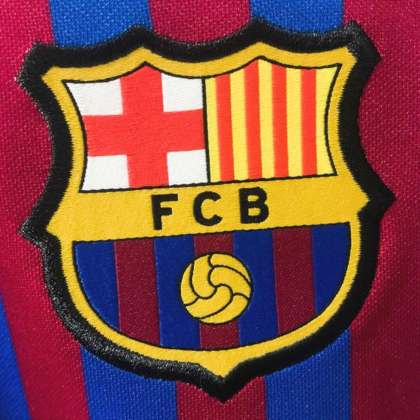

L'Estadi Olímpic Lluís Companys ja té el seu primer record èpic. I és que 24 hores després, els culers encara s'estan fregant els ulls amb la màgica remuntada contra el Celta. Després d'un partit entrebancat, el Barça va capgirar el marcador amb set minuts d'efectivitat total. Un fet que mai havia succeït passat el minut 80 de partit, ja que la remuntada no va ser cuinada a foc lent, sinó que amb una flamarada, en un tres i no res, el marcador va passar del 0-2 al 3-2.
Tot semblava indicar que el Celta assaltaria l'Estadi Olímpic per endur-se els tres punts i que firmaria la primera derrota blaugrana de la temporada. Amb el gol de Larsen al minut 19, els homes de Xavi Hernández es mantenien en desavantatge en el marcador i, arribats al minut 76 de partit, amb un gol de Douvikas, semblava que el duel estava vist per sentència a favor del conjunt gallec.
Però al minut 81, va començar la gesta culer. Lewandowski amb el primer gol va revifar els ànims. Amb el segon, va reactivar l'afició i Cancelo, amb el tercer, va fer esclatar l'eufòria a la graderia i a la banqueta culer, en firmar la primera gran remuntada de la temporada.
